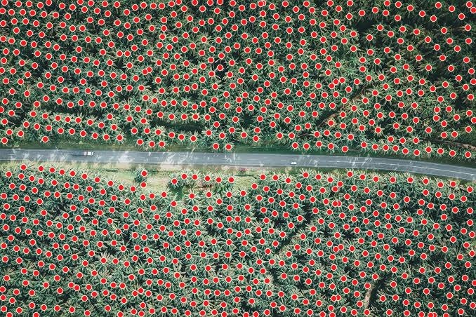

A custom-trained YOLO26 detector that finds individual palm crowns in satellite and drone imagery, then counts them per image or per farm polygon. Built for date farms in AlUla, Saudi Arabia.

Pick another scene below.
These are real outputs from the model, pre-computed for this page. The full app runs the model on your own images, and counts palms inside farm boundaries drawn on a map; see the source repository to run it locally.
Upload an aerial JPG/PNG, or capture a farm polygon from Google Earth Pro at a fixed 600 m camera range.
The app measures median palm width and tiles the image so palms appear about 24 px wide at the model's 640 px input.
Tiles run through the trained model on GPU (CPU fallback); overlapping detections from neighbouring tiles are merged.
Only palms whose centre lies inside the farm polygon count. Labelled images and per-farm CSV are saved.
Python · Ultralytics YOLO26 · PyTorch · OpenCV · FastAPI · Leaflet farm map · KML / geospatial georeferencing · Google Earth Pro automation